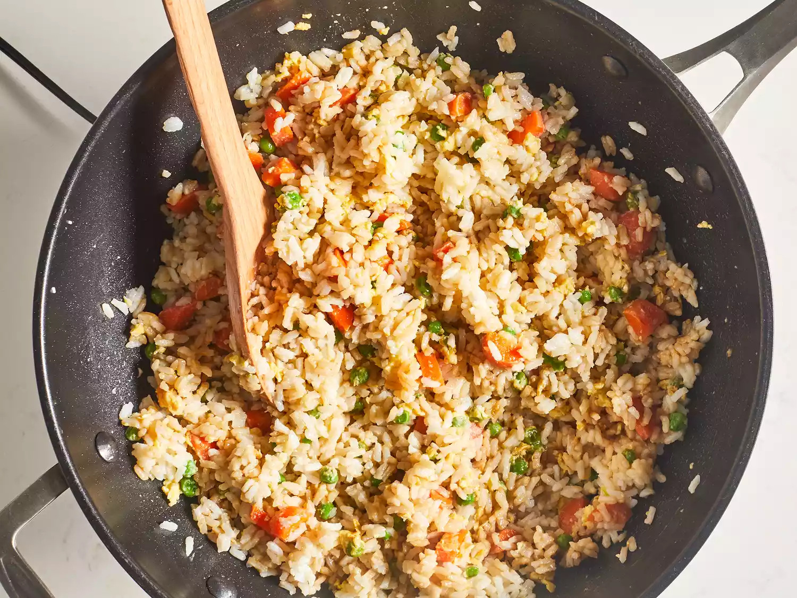

Fried Rice Recipe

Description
Easy basic fried rice recipe to not waste leftovers
Ingredients
- 2/3 cups of chopped baby carrots
- 1/2 cup of frozen green peas
- 2 tablespoons of vegatable oil
- 1 clove of garlic
- 2 large eggs
- 3 cups of leftover cooked and chilled white rice
- 1 tablespoon of soy sauce
- 2 tablespoons of sesame oil
steps
- Assemble ingredients.
- Place carrots in a small saucepan and cover with water. Bring to a low boil and cook for 3 to 5 minutes. Stir in peas, then immediately drain in a colander.
- Heat a wok over high heat. Pour in vegetable oil, then stir in carrots, peas, and garlic; cook for about 30 seconds. Add eggs; stir quickly to scramble eggs with vegetables.
- Stir in cooked rice. Add soy sauce and toss rice to coat. Drizzle with sesame oil and toss again.
- Serve